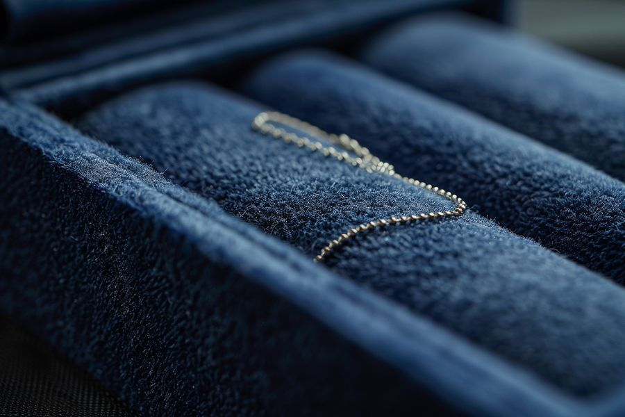
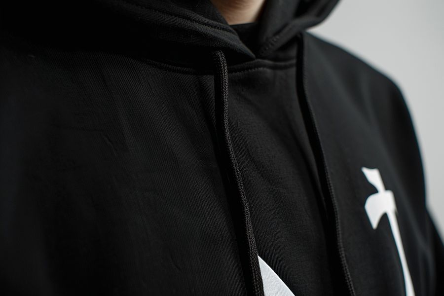
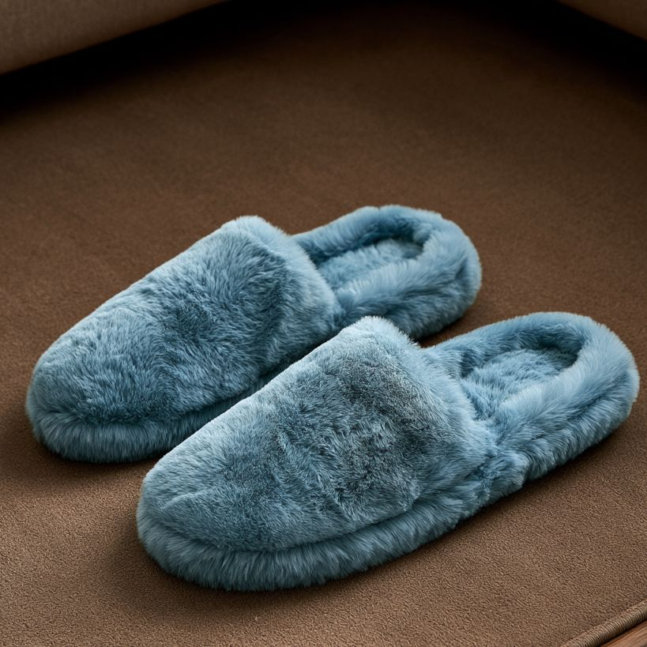
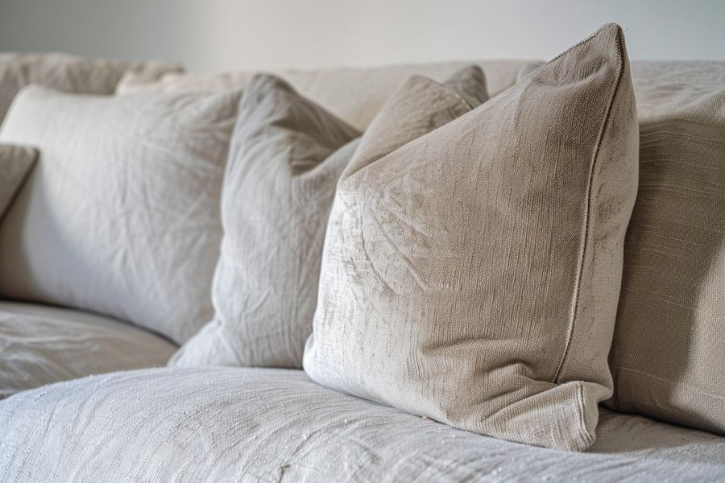
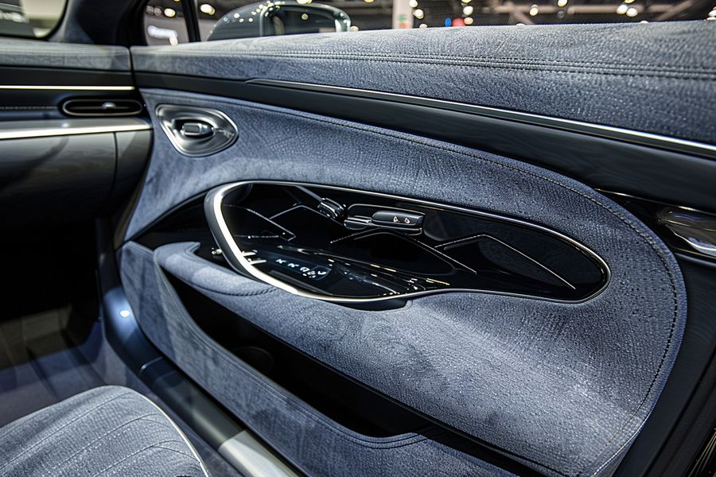

The materials others can't find, we find. The supply others can't handle, we handle. Flock fibers, fiber tow, color pastes, adhesives, chemical raw materials, and equipment — sourced, inspected, and delivered from Foshan.
Six product lines under one roof — and every one of them available for sample testing. Quality first, cooperation after you're satisfied.
Nylon, viscose, polyester, and more — multiple materials and finishes. Our core focus, backed by deep process knowledge.
Continuous filament tow in viscose, nylon, and polyester — the raw material precision-cut into flock fiber.
High-performance, strong-adhesion pastes with precise multi-substrate matching — the core of flocking color.
Water-based acrylic and polyurethane systems, with 0-formaldehyde formulas available. Durability and eco-friendliness in one.
Dyes, crosslinkers, and auxiliaries — full-category coverage to support your entire flocking process chain.
Electrostatic flocking lines — box-type and spray-type. Equipment matched to your materials and output.
A material supply-chain specialist, not a general trader. Here's why manufacturers choose us.
From material matching to process optimization, we solve complex sourcing requirements one by one — grounded in deep industry understanding.
We verify color consistency and adhesion performance at the source, so the materials you receive deliver reliable finished-product quality.
Quick sampling and priority handling for urgent orders. From confirmed requirement to delivered sample, we shorten your wait so supply is never the bottleneck.
Color pastes, flock fibers, fiber tow, adhesives, chemicals, and equipment — one window for everything, so you spend less time coordinating and more time producing.
Six industries covered — flocking makes products more valuable.

Gift boxes, jewelry boxes, and premium packaging liners

T-shirt prints, hoodies, sportswear, and fashion

Shoe uppers, insoles, and logo flocking

Cushions, curtains, bedding, and carpets

Seats, dashboards, and door-panel interiors
Plush toys and model decoration
Tell us what you need — we'll get back to you with a quote within 24 hours.
Contact Us Now